一走出地鐵看見這個大學站，真是樸素中的樸素，看起來像是沒上妝的小姐。
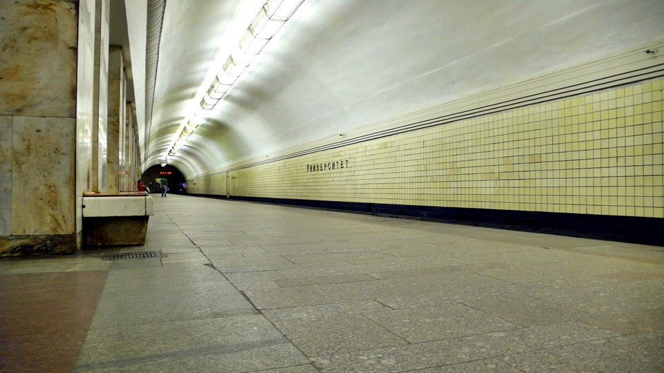
整齊跟清潔是每一站的共同特色，搭了一整天的地鐵還沒看過有打掃的阿姨在維護環境，都是靠大家的公德心才能保持得這麼好。

這是在車廂裡面撿到的，單程票，紙張比較薄，不是用磁感應而是插到機器裡面。
一開始剛買到票的時候我也是往票口的縫塞，還好有防呆設計，硬塞是進不去的，車票上寫了票價十七盧布，賣了將近六千萬張。
不同票種都有自己的計算數字，手上那張十次搭乘的車票上的數字是將近三千萬，搭乘數字高得驚人。

搭著手扶梯往上走，這一站下車的人好像都比較年輕，是因為大學站的關係嗎？
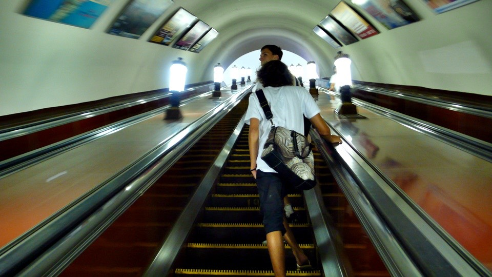
踏出車站了，露天賣花的小販很多，剛從地底出來都會分不清楚東南西北，眼光搜尋著大學的蹤影。

有看到嗎？就在這個水果攤的後面，那一棟尖塔建築就是莫斯科大學，看起來好遠喔，走過去要花了二十分鐘。
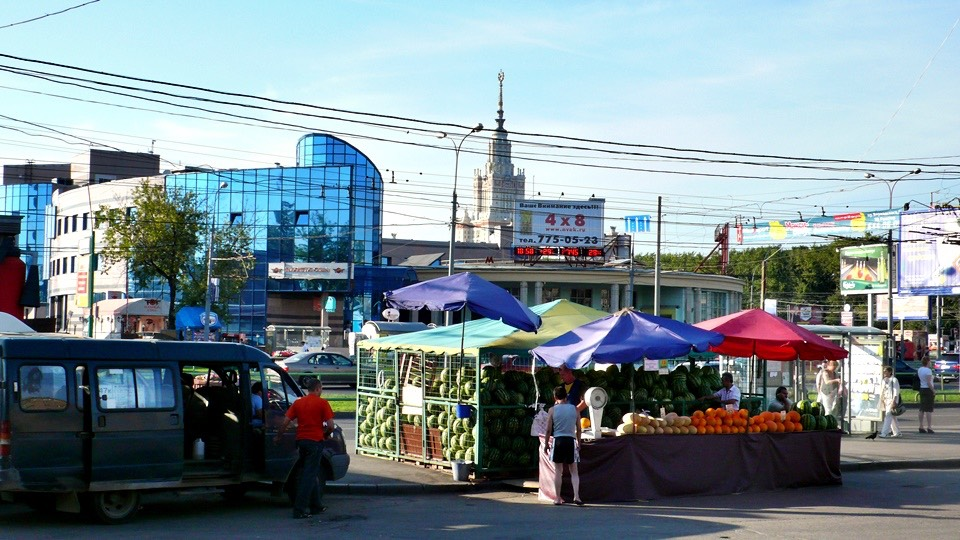
車站周邊有各式各樣的小販，如果這些算是路邊攤的話，那莫斯科的路邊攤還蠻多的～
生意很好的攤販，隊伍排得很長，可是老闆卻不能開始賣，大家都在等，看烤爐裡的雞什麼時候會熟。
拍完照快點離開，盯著看太久的話等等肚子又要餓了~_~
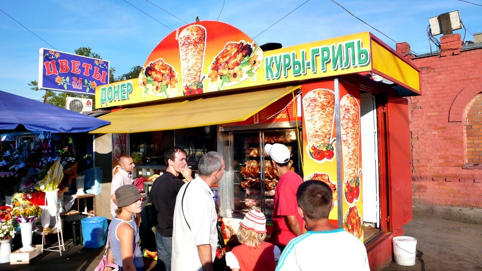
開放式的蔬果攤，什麼水果都有在賣，價錢都是用一公斤來計算，拿了一顆蘋果當點心。
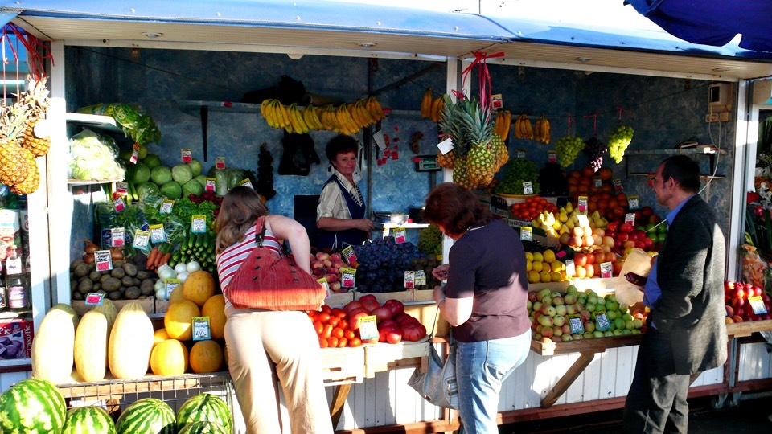
走去大學之前還有一個地方可以先去看一下，它也是相當地有名氣，而且離地鐵站很近，一路啃蘋果走過去，五分鐘的路程。
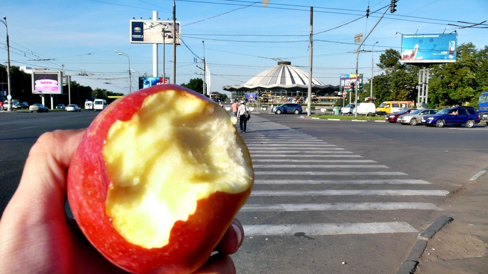
後面那個像是榨柳丁汁東西的就是鼎鼎有名的俄羅斯國家大馬戲團，也有到台灣來表演過的樣子。
還沒到之前以為這裡是搭建的棚子，看到發現是水泥建築不禁有點失望。
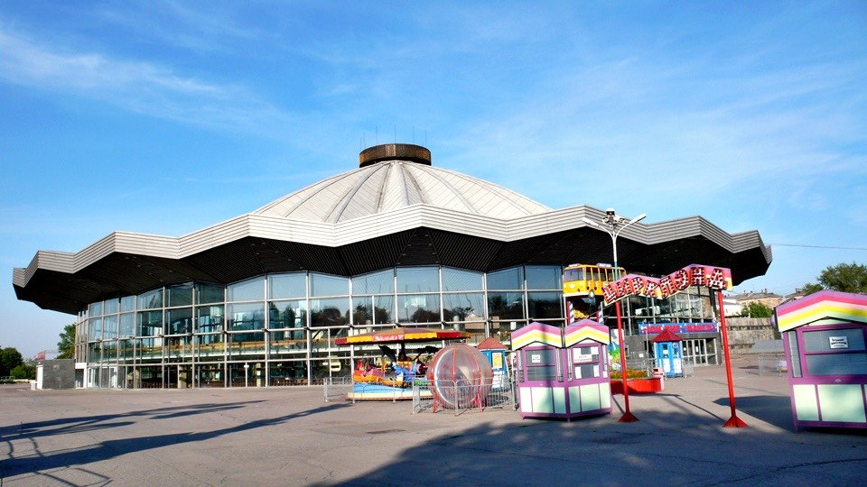
其實看起來不怎麼像馬戲團呢，有點普通，少了那種氣氛。
反正這邊只是順便來走走而已，沒意思就算了～現在就往莫斯科大學的方向走吧。
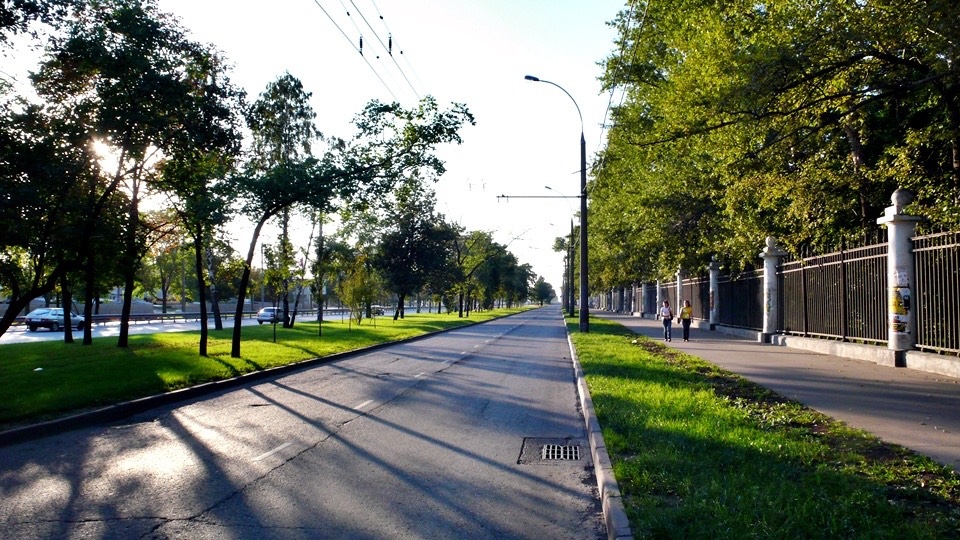
林蔭大道，這個時候大概是下午七點多，計畫趕在太陽下山之前走到大學然後從麻雀山鳥瞰莫斯科。
麻雀山是莫斯科的最高峰，從莫斯科大學的廣場往下鳥瞰，位置比莫斯科河高出七十五公尺，雖然不是很高，但指南手冊說能看到令人感動的景色。
沿著這條路走大約二十分鐘之後就到了莫斯科大學，之前看的那幾棟尖塔建築物通通都不是，這一棟才是正港的。
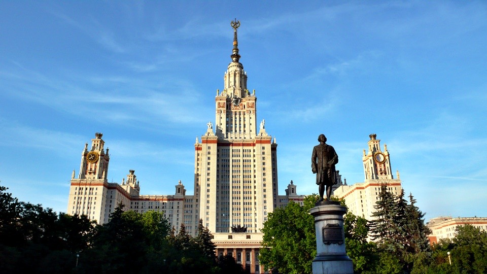
莫斯科大學建立於西元一七五五年，由俄羅斯女沙皇『伊莉莎白』下令建造。
此大學由沙皇建造，但之後莫斯科大學的學術份子卻反對沙皇，試圖推翻帝制，使得莫斯科大學多次被關閉。
莫斯科大學座落於麻雀山，本來稱為列寧山，佔地四千畝，在十月革命之後變成免交學費的學校，現在則要收學費。
最高的尖塔高度是兩百四十公尺，頂端有一顆重達十二噸的五芒星，共有有五千多間房間，走廊的長度總計有三十三公里。
並有教師及研究人員八千六百名，其中四千五百名擁有博士學位，和一百二十五位俄羅斯學院的院士。
學生人數有三萬多名，每年都在增加，留學生人數大約是兩千名，國外學生必須在預備系中學習俄語至少一年的時間才能進入該校正式就讀。
學校前面的這個塑像是Lomonosov(1711~1765)，他是俄國自然科學的奠基人，並創辦了莫斯科大學，被稱為現代科學之父。

主樓的四方都有鐘塔，有的時間不太準，抵達莫斯科大學的時候將近晚上八點，左側的時鐘是對的。
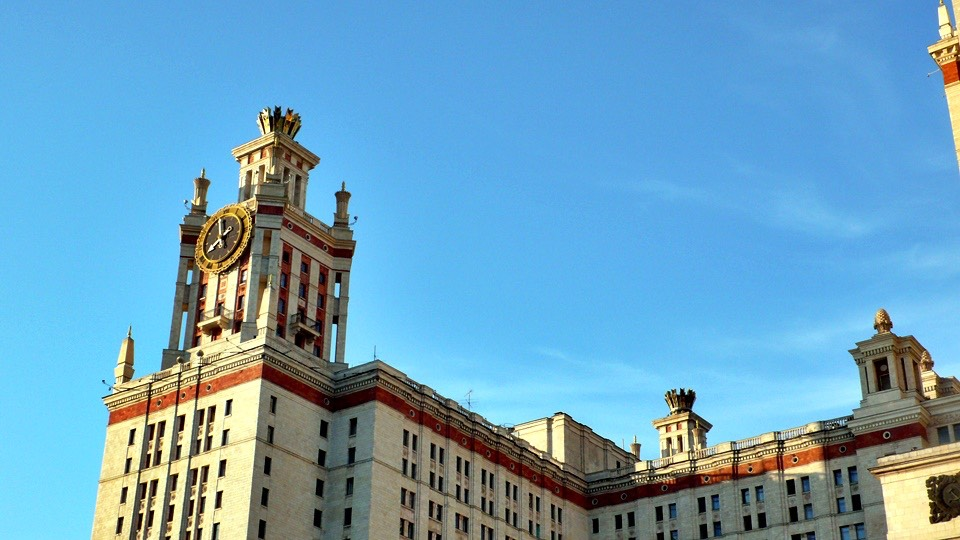
右側的則顯示下午六點，也許是和不同的地方對時吧。
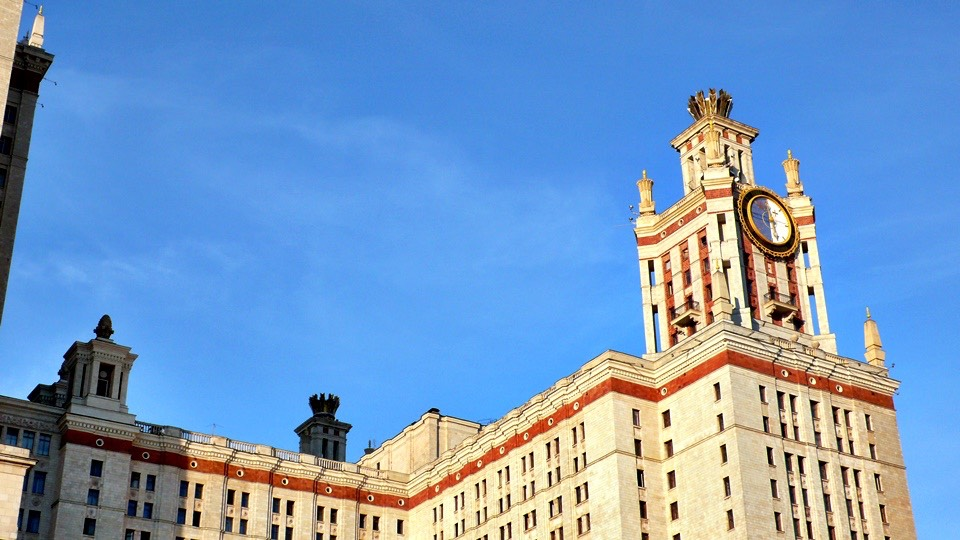
主樓，被包圍在中央，使得莫斯科大學從四個角度看起來都是同樣的景觀，最頂端那個小星星就是重達十二噸的那一顆。
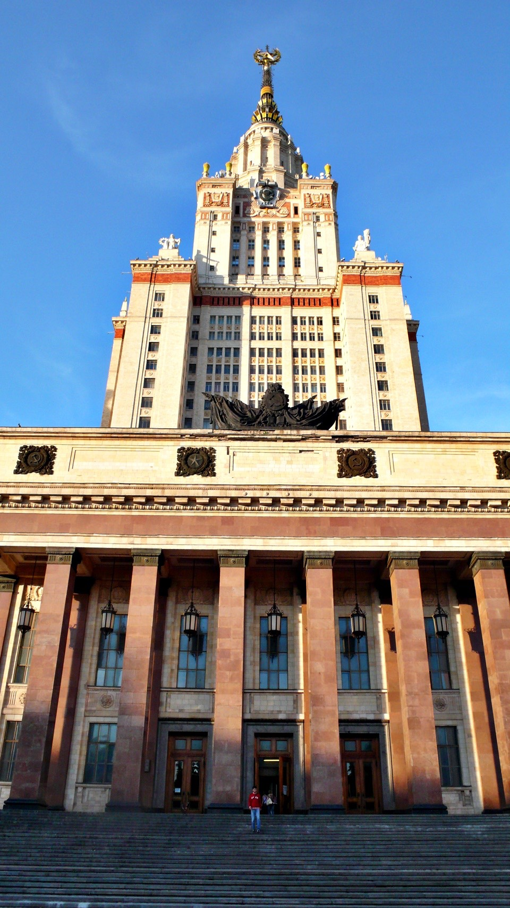
這邊是後門，儘管如此建築的氣派跟雄偉絲毫不減。
換個角度看壯觀的門口設計，柱子全部採用大理石，非常的典雅。
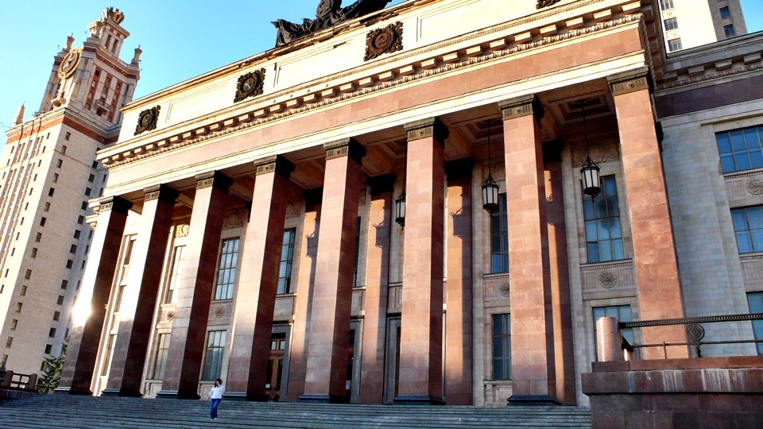
建築的前方就是寬闊的馬路，校內有學區巴士依固定的路線行駛，學區也有自己的馬路。
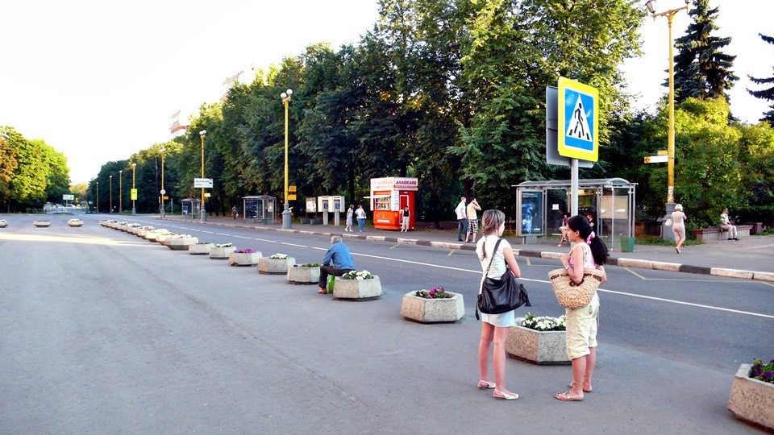
門口旁邊的塑像，看起來像是學生，能夠考上國際評鑑都名列前茅的頂級學府實在不簡單，只有十八分是不可能進得來的。
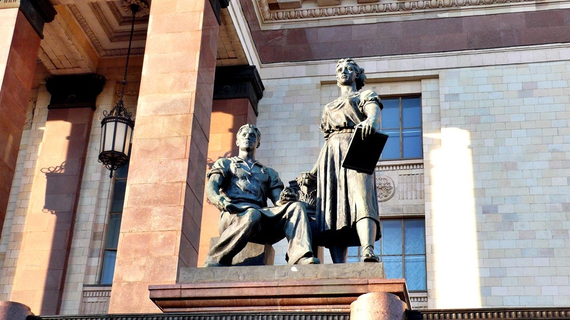
校區非常的寬闊，大到用腳走路都會累，走到這個體育場的時候其實我正陷入迷路的窘狀。
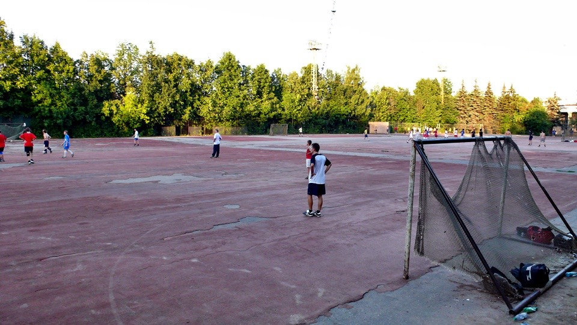
雖然到了莫斯科大學，但是該怎麼走到可以鳥瞰莫斯科的廣場呢？
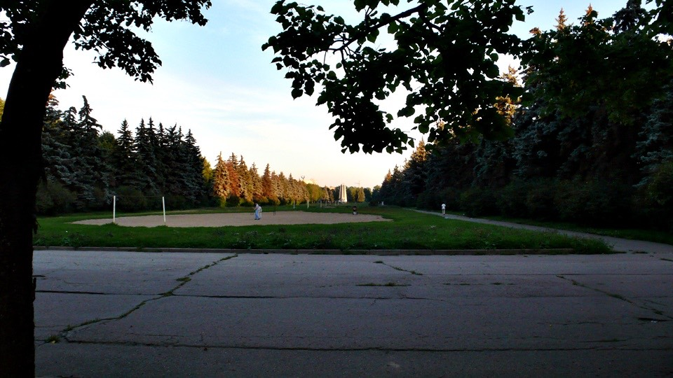
校區內沒有指示的地圖，每一條馬路都是寬得嚇人，路上經過一個學生，問他會不會講英文？回答是『Sure！』
多虧學生指示方向，才得以在迷宮般的校區找到廣場的方向，說穿了路線超簡單，沿著主體建築走一圈，就是走到建築物的正門就是了。

校內種植各式各樣的樹木，包含很多很多的蘋果樹，掉了滿地的蘋果，這些撿起來裝在水桶裡就可以去路邊擺攤子了。
還好當年牛頓不是念莫斯科大學，如果他在這棵樹下面思考的話，會被蘋果砸個沒完。
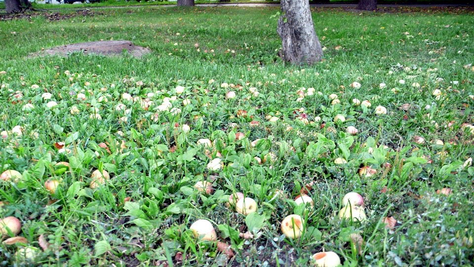
繞了一大圈，總算走到大學的正門，此時將近九點，龐大的建築已經將落日擋住，比城堡還要壯觀的大學，大得令人折服。

正門和後門看起來幾乎一樣，門口坐著很多的學生，門的上方是浮雕，1949~1953的年代意義則不明。
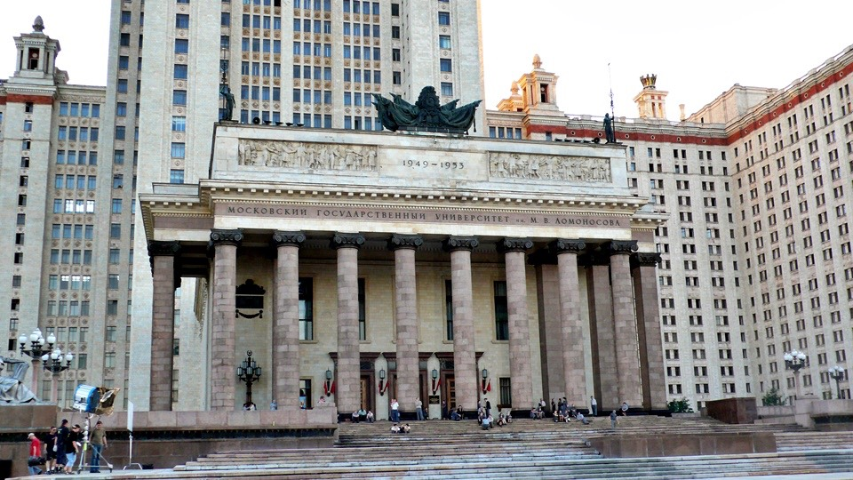
兩側都是強烈探照燈，天黑之後大學會有不同的風貌嗎？
正門的前方是長方型的水池，平靜的水面像超大的鏡子反射出整片天空的雲彩。
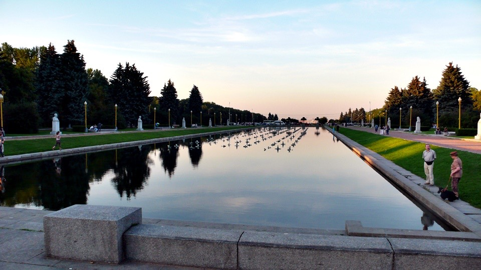
拍兩張大學跟水池的合照。
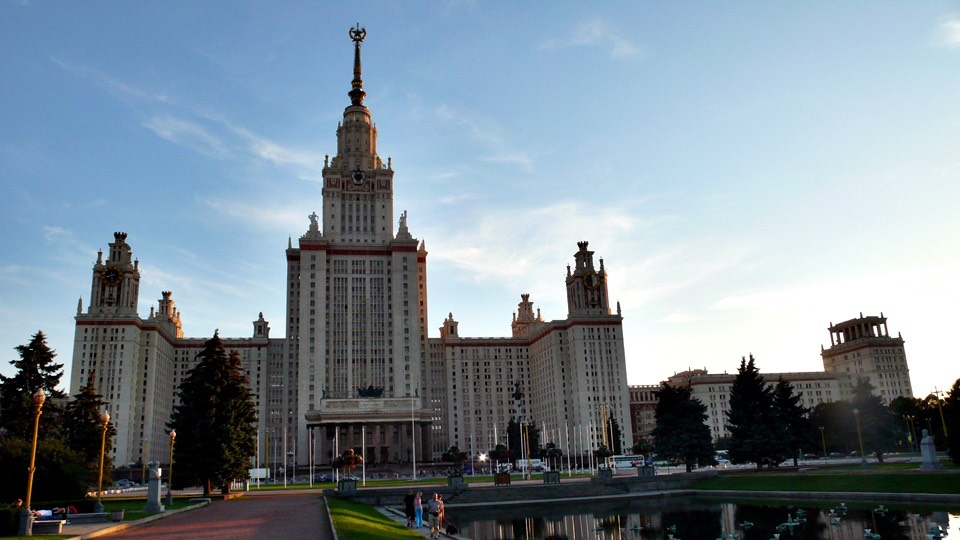
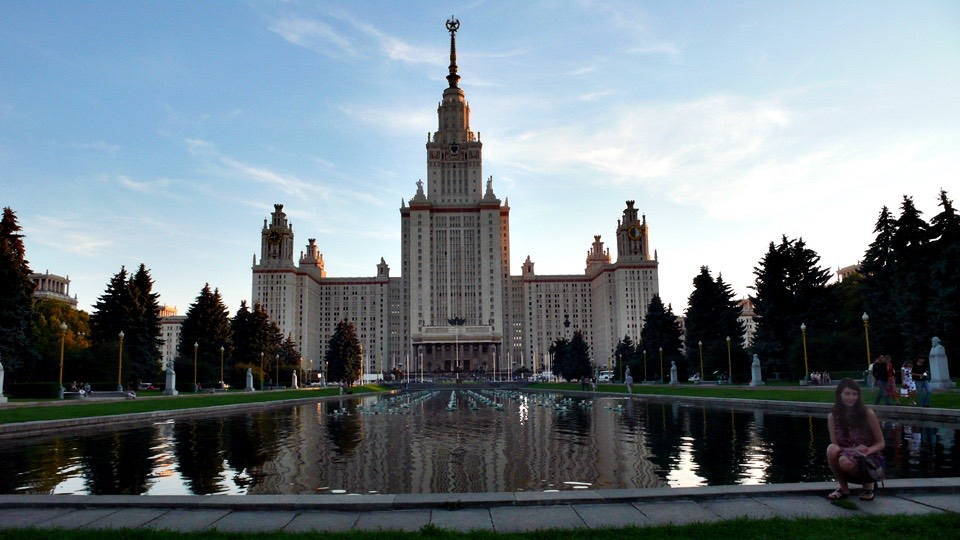
從水池開始前面都是寬闊的廣場，提供了良好的休憩環境，太陽漸漸西下了，趁著天還亮趕緊走到廣場的盡頭去鳥瞰莫斯科。
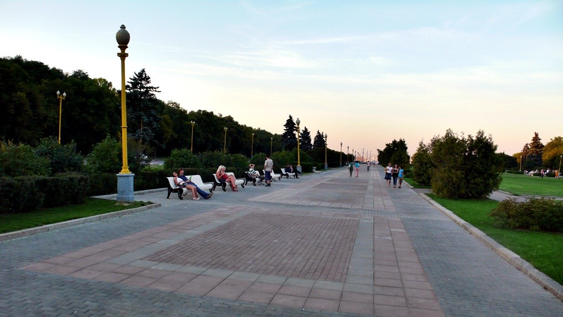
還沒走到底就已經聽到刺耳的甩尾聲和電子音樂，唯一能鳥瞰莫斯科的麻雀山，聚集的人數比起紅場一點也不惶多讓。
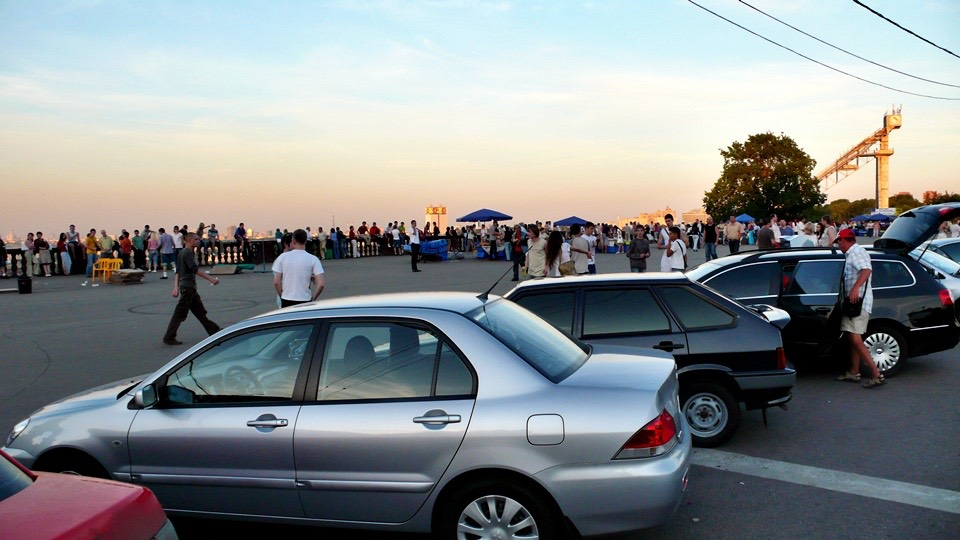
比較少看到遊覽車載觀光客到這邊，大多都是自行開車或是搭公車上來的，有很大一部分則是騎自行車和溜直排輪的民眾。
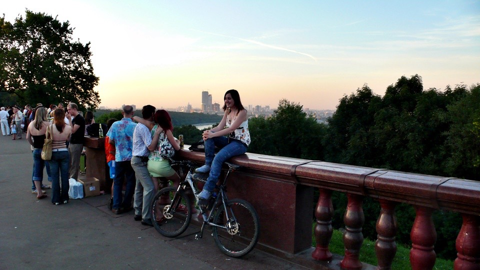
所有人都倚靠在欄杆，喝著啤酒聊天享受美好的時光，除了車內的喇叭音樂開很大之外，也有現場的街頭音樂表演。
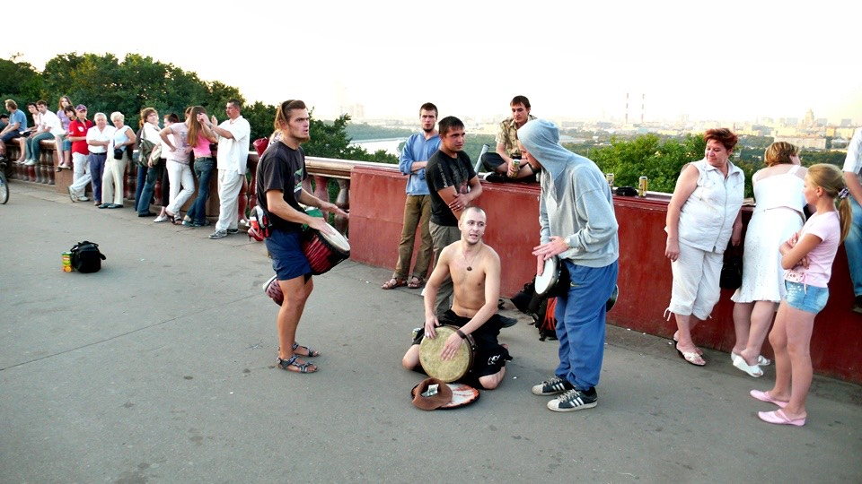
在這邊就能欣賞到指南中所說的，看了會讓人感動的莫斯科景色。
站在廣場向右邊看會見到這樣的景色，底下是麻雀山的綠意，圓頂形的建築就是奧運綜合運動場。
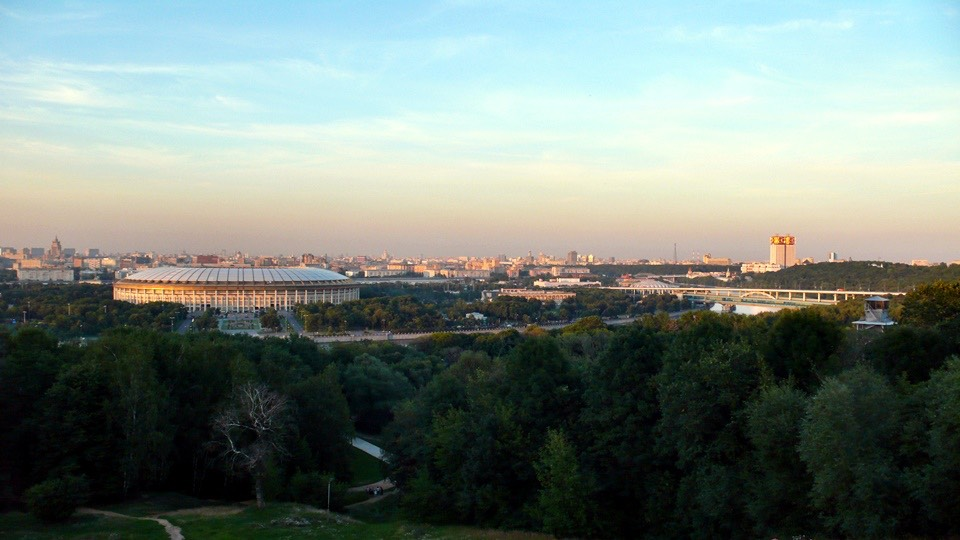
奧運綜合運動場，莫斯科在一九八零年舉辦過第二十二屆的奧運。
但因前一年蘇聯入侵阿富汗，美國在內的許多國家聯合抵制這次奧運會，使得參賽的國家是史上第二少，而參賽的國家甚至只派了一名旗手舉旗入場而已。
向左邊看會看到這樣的景色
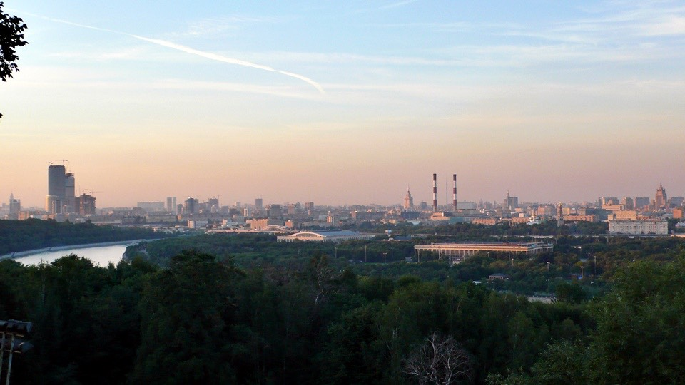
莫斯科河蜿蜒的流過市區，高聳的發電廠煙囪，和莫斯科大學相呼應的尖塔型建築，彼此有七姊妹之稱。
廣場的旁邊是下山的路，開車就從這裡上來，走路的話可以直接穿越麻雀山的山丘直達莫斯科河畔。
這裡還有一座高得驚人的滑雪跳台，聽說莫斯科大學的學生很喜歡爬到這裡跳下去，我的媽呀～考試考糟也不用這樣吧。
在跳台的旁邊則是纜車，目前並沒有在營運。
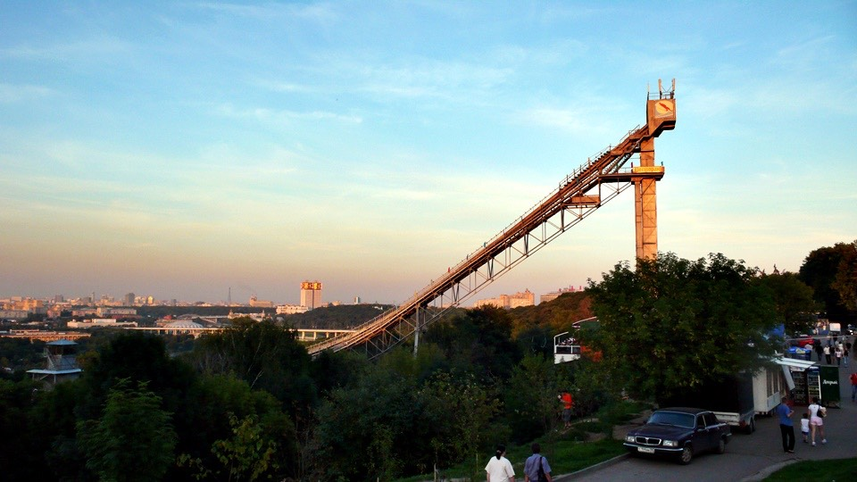
走下這片綠意盎然的草原就可以直達河畔，莫斯科市的最高峰麻雀山和最低處的莫斯科河緊緊相連在一起。
下坡路非常的陡，路面不是階梯，而是大根的水泥柱所排列而成的斜坡，走上來的人沒有不氣喘吁吁的。
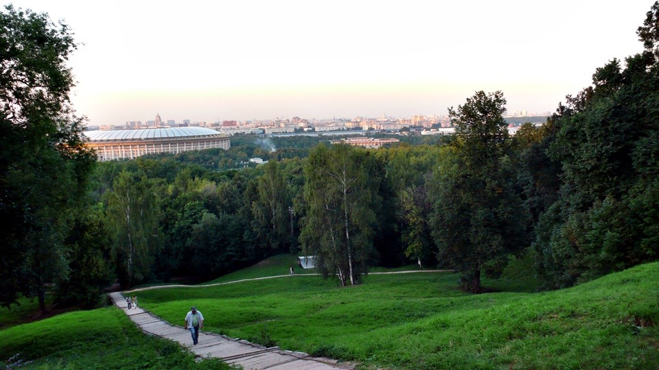
還好是下坡，注意不要滑倒就沒事了，走到坡底的時候往回一看，跳台實在高得嚇死人，莫斯科的大學生很喜歡跳這個？
如果傳言屬實的話，這邊真是值得一來的景點，光是看人從最頂端一路不要命的滑下來，用看的心臟都會負荷不了。
纜車也是依著麻雀山往下走，這段山坡路並不難走，高度落差也才七十五公尺而已，纜車要冬天下雪的時候才會運轉給滑雪的人搭。
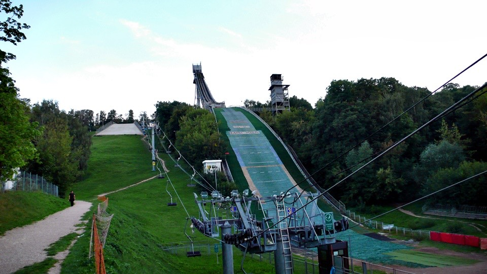
已經快要到河畔了，近在眼前的距離，這個小朋友牽著車是想到山上去嗎？用騎車的方式得繞別條路，這邊只適合步行上山。
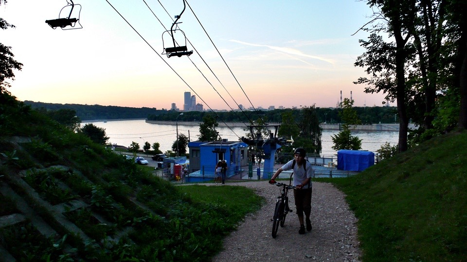
再度返回莫斯科河，不論從山上和從河邊看這棟奧運綜合紀念館都很漂亮，河畔隨時都有人在這邊，情侶的數量多得很刺眼，沿路在放閃光彈。
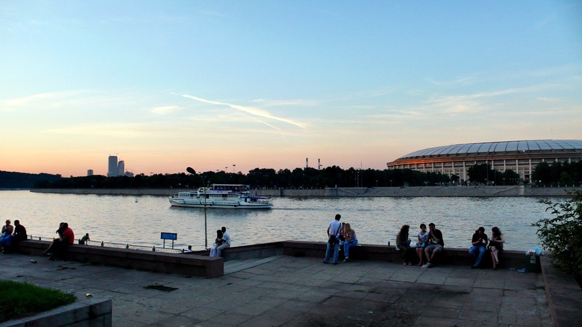
搭車到大學站，走了一大段的路又回到河邊，沿著河走就可以回去蓋在橋中央的車站，這一來一往就走了整整一站的距離，花了兩個多小時～
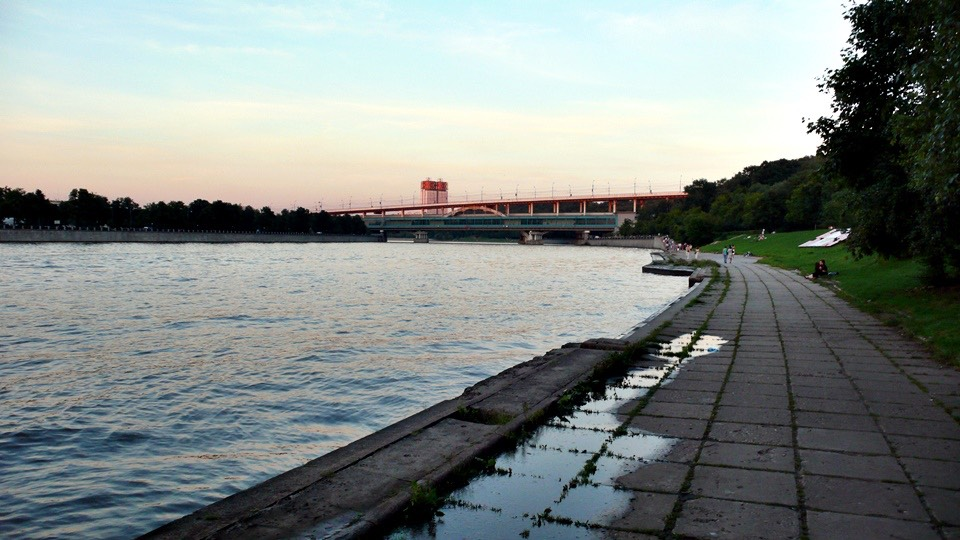
河面上的船隻數量驚人，讓河水拍打著堤岸，浪花大一點的話還會飛濺到河畔上，河面上都是載浮載沉的小鴨子，很可愛～
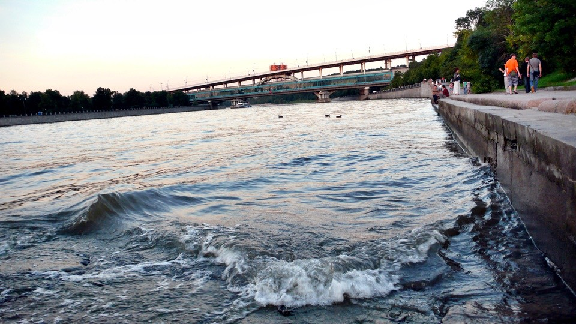
非常閃的一段路，情侶多得跟什麼一樣，接吻只是小意思，推倒在草皮上的沿路都是，去死去死團的團員可以結伴到莫斯科河畔來搖旗吶喊。
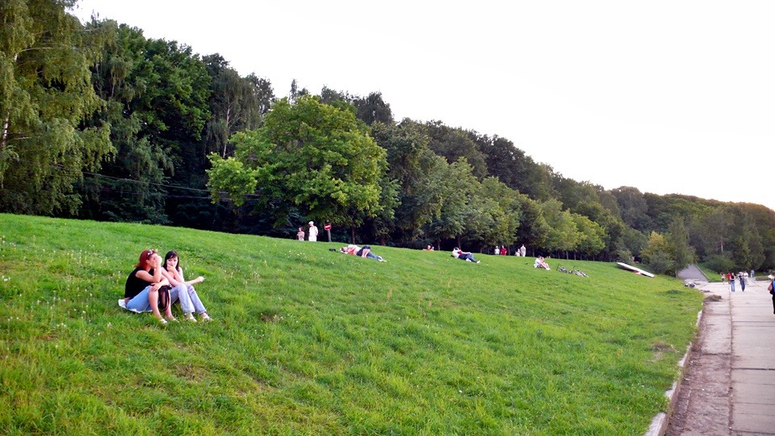
夕陽漸漸西下，雲朵像棉絮一樣，天空慢慢被落日染紅，往來頻繁的觀光船從河面上駛過，小鴨子你們要注意別被撞到，莫斯科河因為有你們所以看起來比較乾淨。
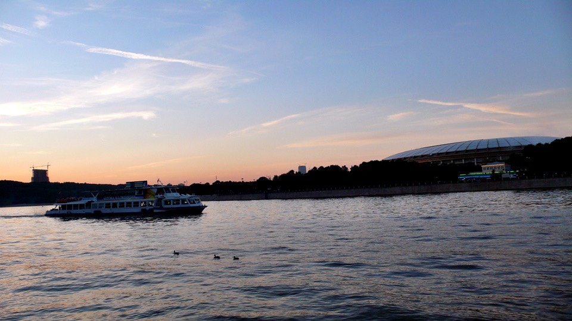
終於快要走到車站了，莫斯科人也喜歡喝酒，歲數大一點的喜歡烈酒，年輕人則偏好啤酒，河畔和麻雀山上可以看到很多喝酒的人。
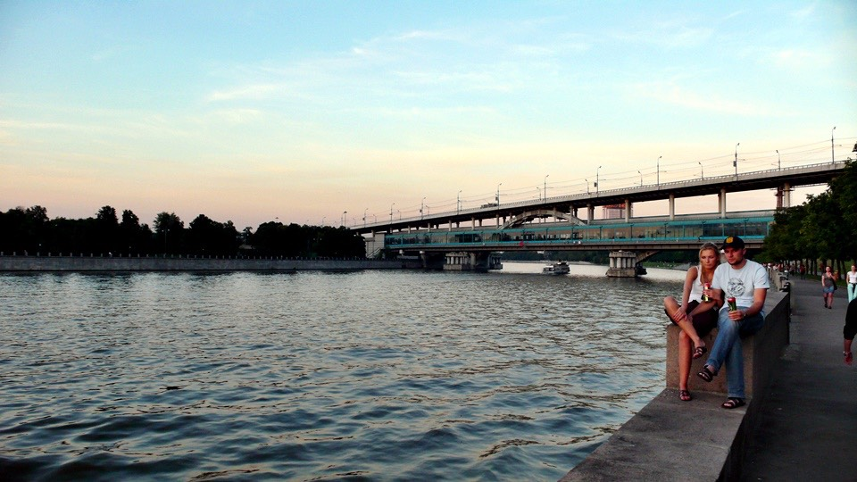
紅色的M表示地鐵站到了，入口設立在一個小土丘，低調到不行，只有行人可以上得去，反正地鐵本來就是給人搭的，沒有規定車站要蓋在馬路邊。
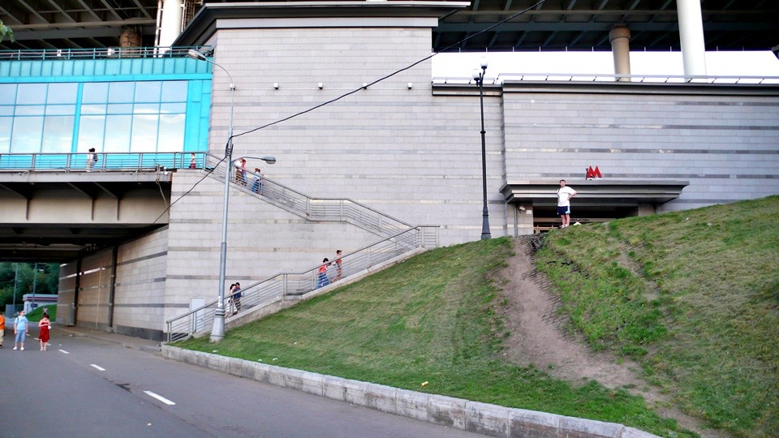
最後的夕陽餘暉，再過五分鐘太陽就沒入地平線了，今天走了非常非常多的路，從早上鼓起勇氣踏進地鐵站開始，去了好多地方，腳好像走到要斷掉一樣。
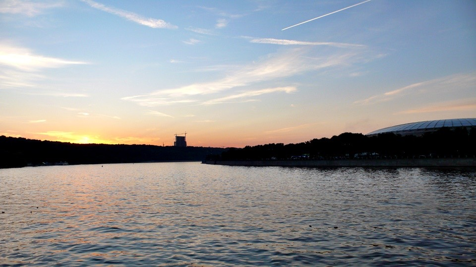
從河邊搭上地鐵準備要回去了，等一下還要轉車，從現在的紅線轉到環狀線然後再轉橘線。
搭了一整天的地鐵，現在這都是小意思，但是玩得好累喔，真想快一點回去休息。
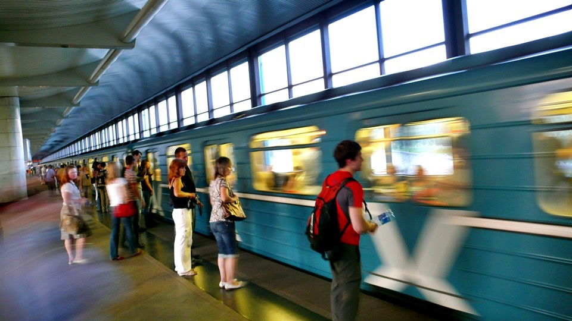
站在車廂裡面，自己疲憊的時候覺得路人看起來也跟著很累的樣子，回顧今天去過的地方，實在有夠多的。
自己一個人、一張地鐵票、一本薄薄的免費指南，可以在莫斯科玩這麼多景點，誰說自助旅行會很困難？
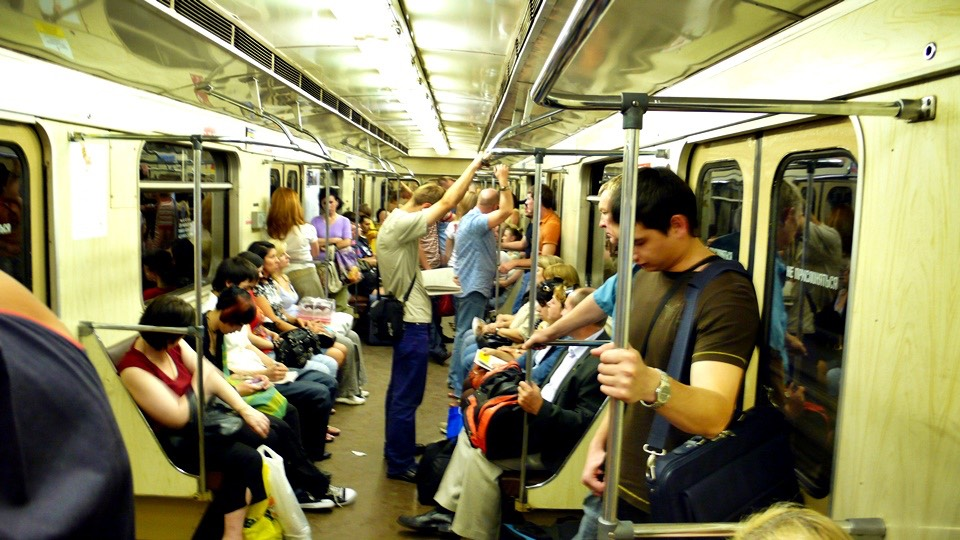
旅行本來就是去體驗當地的生活，而不是比較哪一個國家的旅館比較舒適，那一間餐廳的自助餐比較好吃。
沒有意外插曲的旅行真的很沒意思，想要看到和觀光書籍上不同的景色，唯有試著親自去走一趟。
沒有導遊的小旗子、沒有司機大叔的遊覽車、沒有人幫你訂飯店和餐廳，一切靠自己的感覺是很爽的，就算迷路緊張到想尿褲子，也是一種難得的可貴。
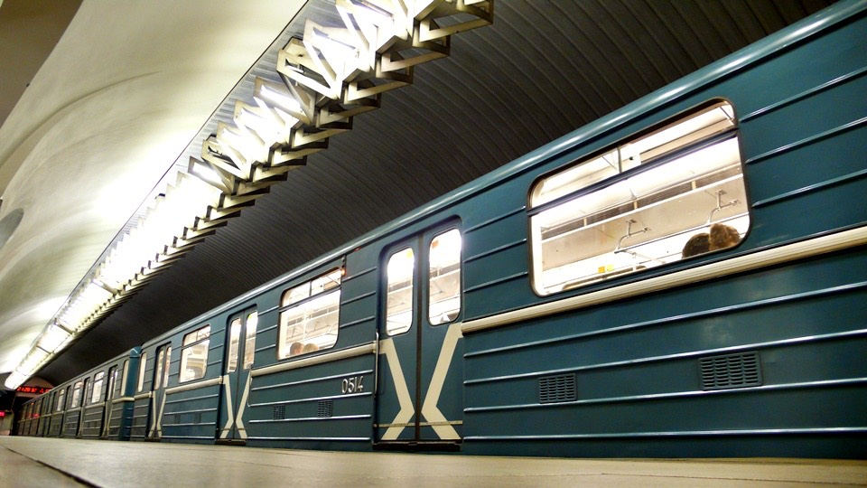
轉了幾次車，又回到熟悉的地鐵站，明明都是在地底下，白天的時候搭車就覺得裡面像白天。現在知道太陽下山了，感覺地鐵站裡也像是夜晚一樣。
搭上長長的手扶梯，走出車站，晚上九點半，遊蕩了一整天，疲憊但是收穫豐富，心滿意足的走回宿舍。
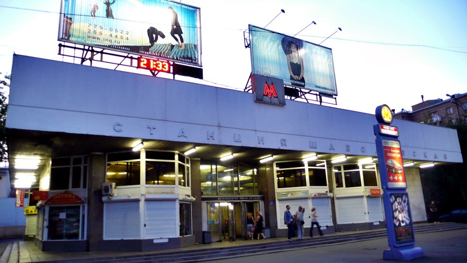
當你看完這一篇遊記的時候，當天晚上回到宿舍的我，正撐著眼皮整理今天的遊記，照片的數量暴增，文字的敘述也想盡可能得充實。
寫著寫著發現一篇寫不下，就打算拆成兩篇，寫到半夜三點發現兩篇還是寫不下，所以拆成三篇。
清晨六點終於整理完第二篇的遊記，睡了幾個小時起來繼續再寫，從來不知道寫遊記是這麼累的事情，也很難相信一天之內跑了如此多的地方。
第三篇寫到一半的時候，就知道該是拆成四篇來寫的時候了，就這麼越寫拆成越多篇，好像沒完沒了的一直寫，但畢竟還是畫下了八月十一日的句點。
莫斯科很美麗，有機會的話這輩子一定要來一趟，用自己的眼睛和雙腳遊覽這個城市，保證讓你不虛此行～不枉此生。
繼續閱讀：8.12 玩夠啦～該收心了
俄羅斯-盧布－ 1：1.3 台幣
8.11
總計：1555元
地鐵十次搭乘票140元、熱狗配可樂61元、2G記憶卡1190元、麥當勞139元、公園門票10元、蘋果15元